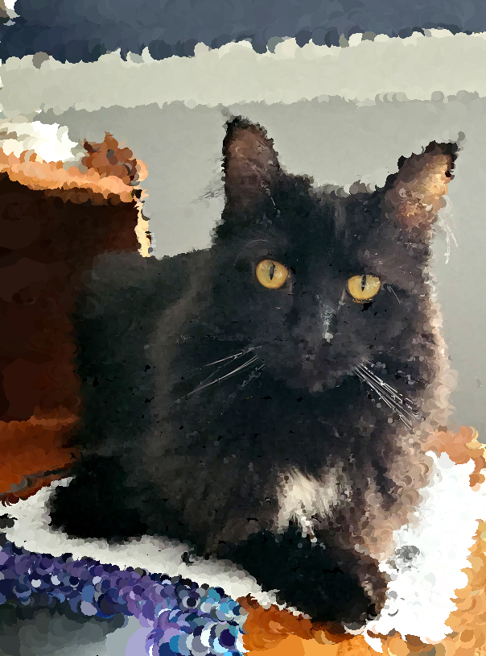
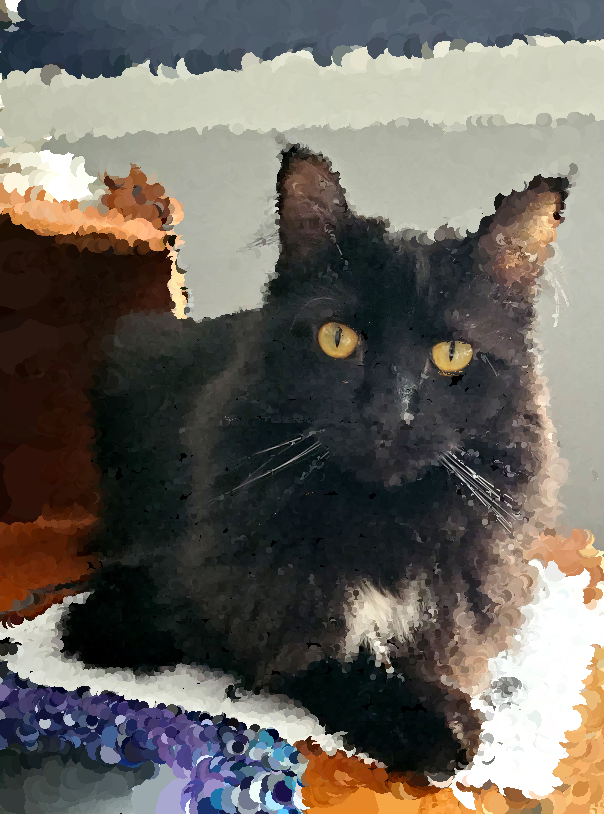

Miniature photo editor created using OpenGL in C++ in my Visual Computing class.
There are five brushes: line, scattered lines, scattered points, circles, and scattered circles. Users can adjust the thickness and angle of the brushes using sliders. They also have the option to adjust these values by right-clicking, the direction of the mouse, or the gradient of the image. Users can also adjust the opacity of the brush.